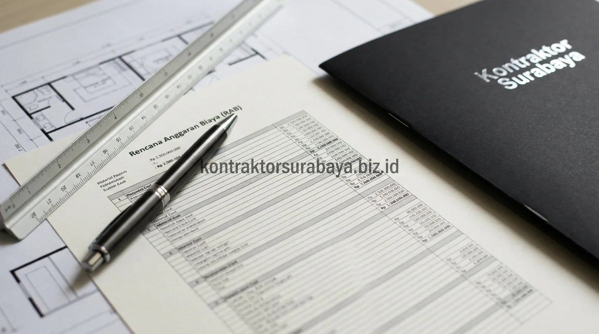
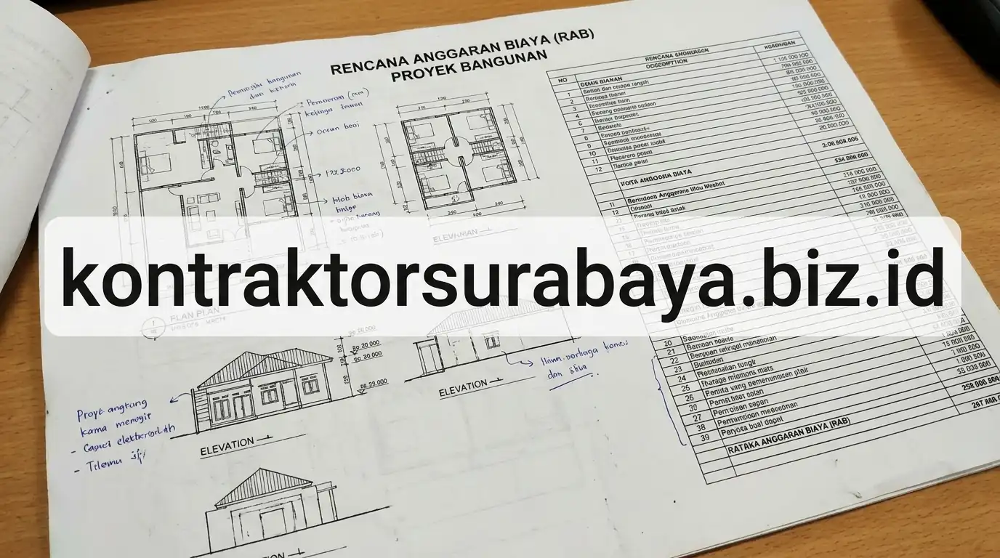

Salah satu kekhawatiran terbesar pemilik rumah saat hendak membangun atau merenovasi adalah risiko pembengkakan biaya (over-budget) di tengah jalan. Proyek yang mangkrak atau hasil akhir yang tidak sesuai harapan sering kali berakar dari ketiadaan dokumen perencanaan finansial yang detail. Di sinilah pentingnya memahami Rencana Anggaran Biaya (RAB) sebagai kompas pengendali biaya utama sebelum sekop pertama menyentuh tanah.
1. Definisi dan Fungsi RAB dalam Sebuah Proyek Konstruksi
RAB adalah dokumen yang merinci estimasi biaya setiap komponen pekerjaan konstruksi, berfungsi sebagai acuan anggaran sekaligus alat kontrol pengeluaran selama proyek berjalan.
Dokumen ini disusun sebelum pekerjaan fisik dimulai, berdasarkan gambar kerja DED (Detail Engineering Design) dan Rencana Kerja & Syarat-syarat (RKS) yang telah disepakati. Dengan memiliki RAB resmi, baik pemilik rumah maupun kontraktor memiliki pijakan hukum dan finansial yang transparan mengenai total pengeluaran serta jadwal pencairan termin bertahap.
2. Komponen Utama yang Tercantum dalam RAB
Biaya material, biaya upah tukang, biaya sewa alat, dan biaya overhead atau lain-lain adalah empat komponen utama yang selalu tercantum dalam RAB proyek konstruksi.
- Biaya Material / Bahan: Menghitung seluruh kebutuhan material fisik, mulai dari semen, pasir, besi beton ulir SNI, bata ringan, hingga keramik lantai dan cat.
- Biaya Upah Tenaga Kerja: Dihitung berdasarkan produktivitas kerja harian mandor, kepala tukang, tukang batu/kayu/besi, dan pembantu tukang (kenek).
- Biaya Sewa & Operasional Alat: Mencakup sewa mesin molen cor, scaffolding pipa besi, mesin stamper tanah, hingga alat ukur theodolite.
- Biaya Overhead & Manajemen: Meliputi pengeluaran operasional lapangan, listrik kerja, air kerja, mobilisasi armada, dan pengawasan proyek oleh tim teknik.

3. Bagaimana RAB Disusun Berdasarkan Volume Pekerjaan?
RAB disusun dengan menghitung volume setiap item pekerjaan dari gambar kerja, kemudian mengalikannya dengan harga satuan material dan upah yang berlaku.
Perhitungan volume pekerjaan (take-off quantity) dilakukan dengan rumus matematis baku:
Volume dihitung dalam satuan standar teknik seperti meter kubik (m³) untuk galian dan cor beton, meter persegi (m²) untuk pasangan dinding dan plesteran, serta meter lari (m') untuk instalasi pipa dan kabel. Pendekatan ini membuat seluruh angka dapat diverifikasi secara ilmiah di lapangan.
"RAB yang baik bukanlah yang termurah, melainkan yang paling transparan, realistis terhadap harga pasar, dan mampu menjamin mutu struktur tidak dikorbankan."
4. Manfaat Memiliki RAB Sebelum Memulai Pembangunan
Kontrol anggaran yang lebih akurat, transparansi biaya, pencegahan pembengkakan anggaran, dan dasar negosiasi dengan kontraktor adalah empat manfaat utama memiliki RAB sebelum membangun.
- Kontrol Finansial Terukur: Klien dapat memetakan arus kas (cash flow) pembayaran per termin sesuai persentase progres fisik di lapangan.
- Transparansi Mutu Material: Mencegah praktik penurunan mutu bahan karena spesifikasi merek dan tipe sudah terkunci di dalam lampiran kontrak.
- Mencegah Konflik Pekerjaan Tambah-Kurang: Setiap permintaan modifikasi denah di tengah proyek dapat dihitung deviasi biayanya secara objektif.
- Dasar Kontrak Kerja yang Sah: Menjadi lampiran wajib surat perjanjian kerja konstruksi (SPK) yang melindungi hak hukum kedua belah pihak.
5. Perbedaan RAB dan Penawaran Harga dari Kontraktor
RAB berisi rincian volume dan harga satuan per item pekerjaan, sementara penawaran harga dari kontraktor terkadang hanya berupa angka global tanpa rincian yang dapat ditelusuri.
Penawaran harga borongan global (misal: "Bangun Rumah Rp 4,5 Juta/m²") sangat berisiko bagi pemilik rumah karena tidak merinci kedalaman pondasi, diameter besi yang digunakan, maupun merek pipa yang dipasang. Sebaliknya, dokumen RAB detail (BOQ) membedah seluruh komponen secara terbuka sehingga klien dapat membandingkan penawaran kontraktor secara apple-to-apple.
6. Kesalahan Umum dalam Membaca atau Menyusun RAB
Tidak memeriksa rincian volume pekerjaan, mengabaikan biaya overhead, membandingkan RAB dari sumber berbeda tanpa spesifikasi yang sama, dan tidak menyisihkan dana cadangan adalah empat kesalahan umum terkait RAB.
- Tergiur Total Biaya Murah Tanpa Cek Volume: Sering kali volume pekerjaan sengaja dikurangi di atas kertas agar totalnya tampak murah, lalu ditagihkan sebagai biaya tambahan di tengah proyek.
- Lupa Menghitung Biaya Sambungan Utilitas: Mengabaikan biaya pasang baru meteran PLN, PDAM, atau pengurusan izin PBG kota Surabaya.
- Membandingkan RAB dengan Spesifikasi Beda: Membandingkan harga bata ringan vs bata merah, atau keramik standar vs granit tile tanpa melihat disparitas harganya.
- Tidak Menyediakan Dana Kontingensi: Tidak menyisihkan dana darurat 5–10% untuk menghadapi kondisi tak terduga di dalam tanah galian.
Memahami RAB sejak awal membantu calon klien lebih siap secara finansial maupun teknis sebelum memulai proyek pembangunan. Pelajari cakupan layanan hitung biaya pada halaman jasa hitung RAB Surabaya, atau lihat tanya jawab seputar konstruksi pada halaman FAQ kami.
